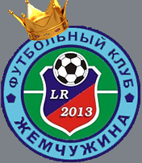
Жемчужина
Футбольный клуб
Турнирная Доска
1 Арсенал
2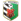Полтава
3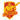Ингулец
4 Колос
Колос
5 Десна
Десна
6 Гелиос
Гелиос
7Авангард
8Горняк-Спорт
9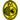Рух
10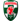Оболонь-Бровар
11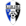Балканы
12 МФК Николаев
МФК Николаев
13Жемчужина
14 Кремень
Кремень
15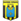Нефтяник-Укрнефть
16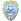ПФК Сумы
17Волынь
18Черкасский Днепр
Вратарь
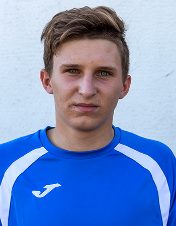
Дмитрий Стародубец
Защитник
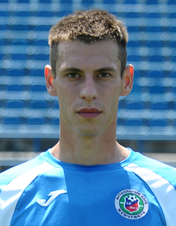
Максим Вдовиченко
Защитник
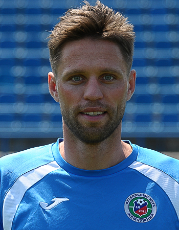
Дмитрий Поспелов
Защитник
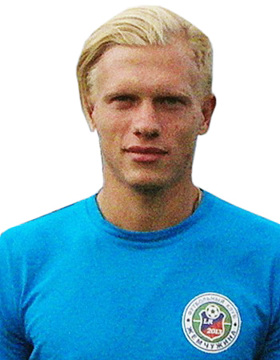
Сергей Петько
Защитник
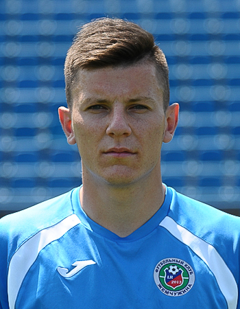
Василий Курко
Защитник
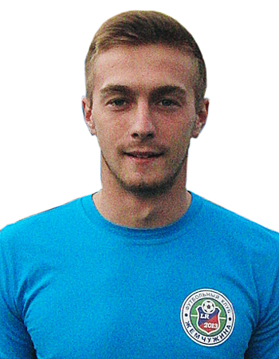
Денис Норенков
Защитник
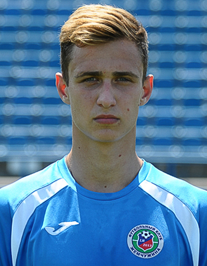
Дмитрий Деменчук
Защитник
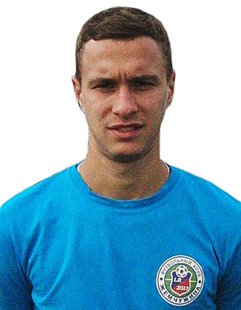
Евгений Мурашов
Защитник
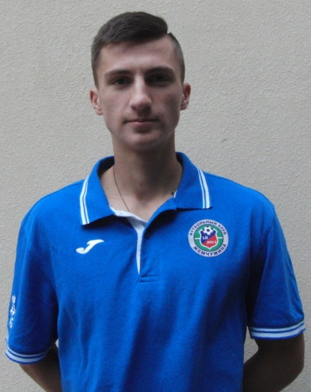
Евгений Терзи
Полузащитник
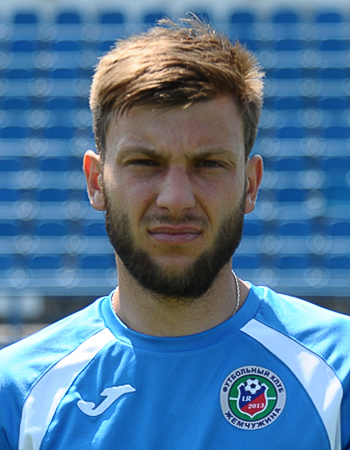
Руслан Паломар
Полузащитник
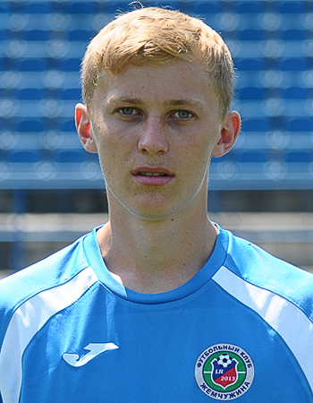
Денис Долинский
Полузащитник
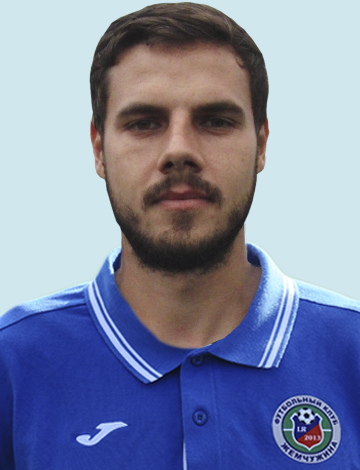
Вячеслав Акимов
Полузащитник
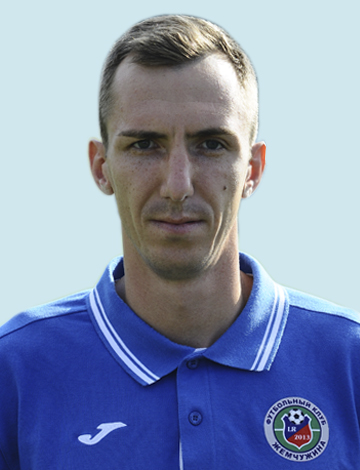
Дмитрий Климаков
Нападающий
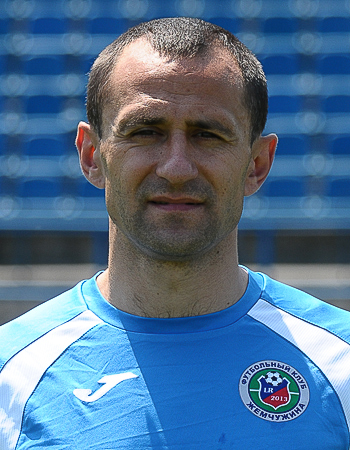
Тарас Лазарович
Нападающий
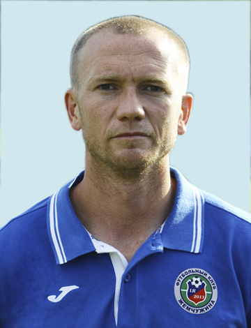
Анатолий Диденко
Нападающий
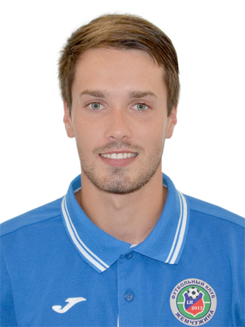
Артём Кулишенко
Нападающий
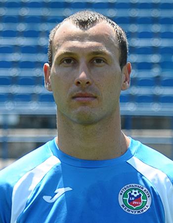
©2017
Проект был созданОпрей Николаем